Instituto FSC.
Fundações Sem Complicações
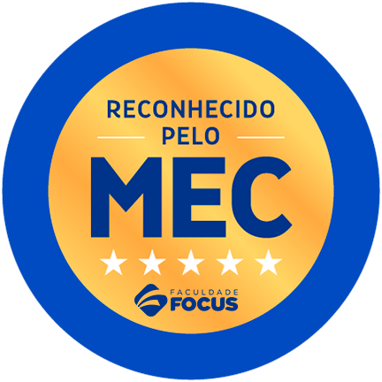
Pule a fila: Agende agora uma reunião com o especialista do nosso time pedagógico
Se ainda houver vagas disponíveis.
Agende sua reunião com a equipe FSC
Escolha o melhor horário para conversar com o time pedagógico e entender os próximos passos da Pós.
Abaixo, veja mais informações sobre a Pós!
100% focada na prática
Do fundamento à execução, com obras reais desde o primeiro módulo
Você aprende dimensionando, projetando e decidindo direto em obra, com casos reais de projetos de pequeno, médio e grande porte.
O que rege o programa da pós-graduação: professores que trabalham, que são projetistas, que dimensionam e decidem fundações todos os dias.
Quero aprender
Conheça o fundador do Instituto FSC
Dr. Vinícius Lorenzi
Engenheiro Civil · Doutor em Geotecnia
Doutor em Geotecnia pela PUC-PR, mestre pela COPPE/UFRJ, engenheiro civil com mais de 16 anos de atuação em campo.
Sócio da Fungeo Fundações, Sollium Geotecnia e Instituto FSC. Autor dos livros Fundações na Prática (2022) e Cortinas de Contenção e Tirantes na Prática (2025).
Coordenador da Pós-Graduação em Engenharia de Fundações e Contenções, o mesmo engenheiro que você vai acompanhar pelos próximos 18 meses.
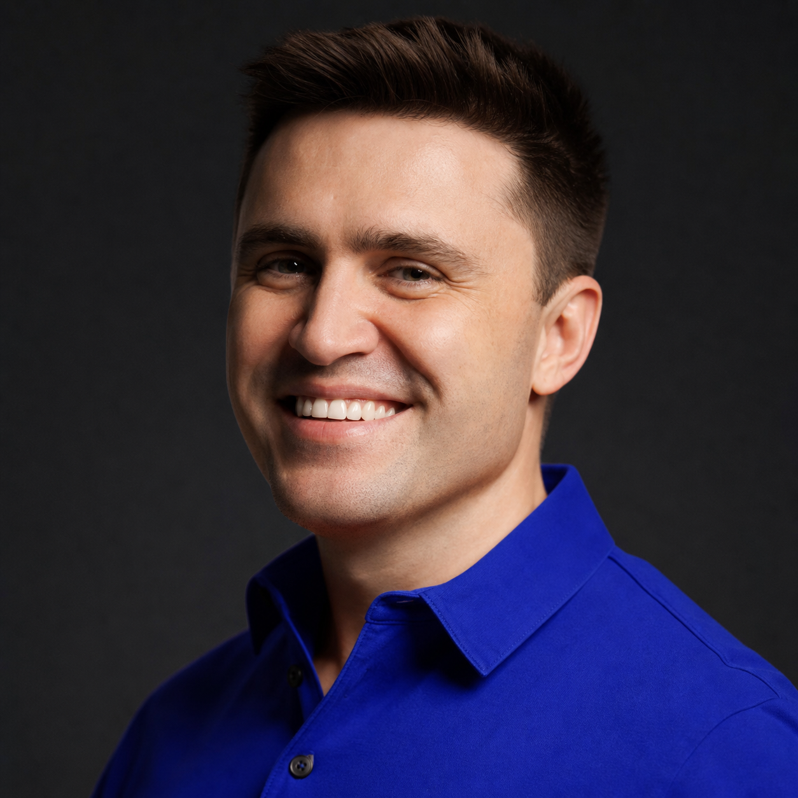
Conheça seus mentores

Nivaldo de Maria
Engenheiro Civil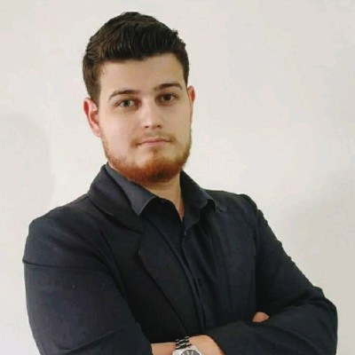
Sandro Valerio
Engenheiro Civil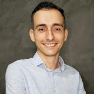
Fabrício Gonzalez
Engenheiro CivilJaqueline Bogorni
Engenheira Civil
Thays Car Feliciano
Eng. Geotécnica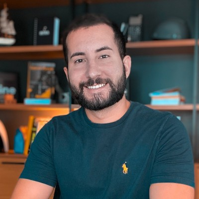
Luiz Fernando
Engenheiro Civil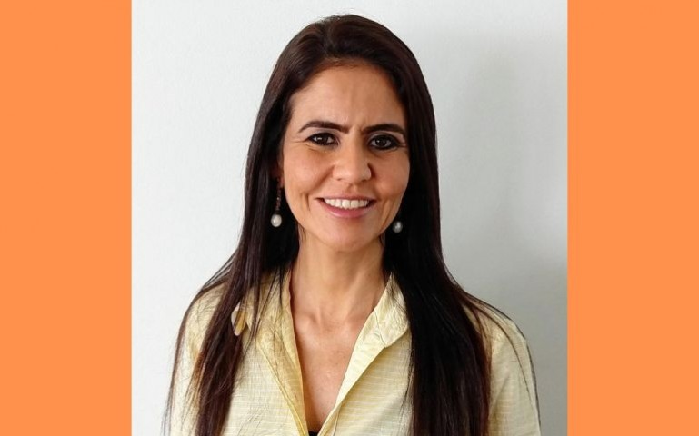
Juliane Marques
Engenheira Civil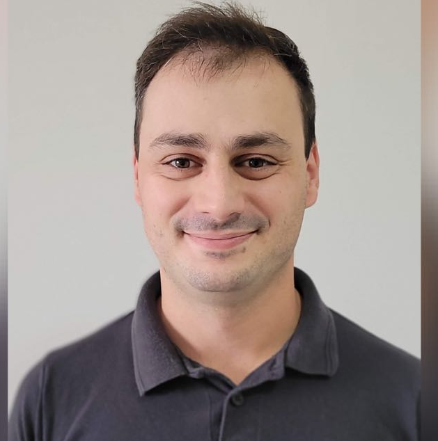
Renan Tori
Engenheiro Civil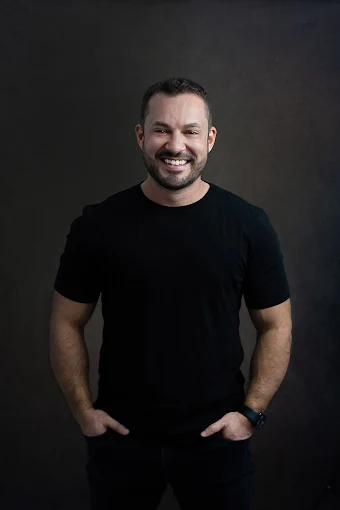
Rangel Lage
Engenheiro Civil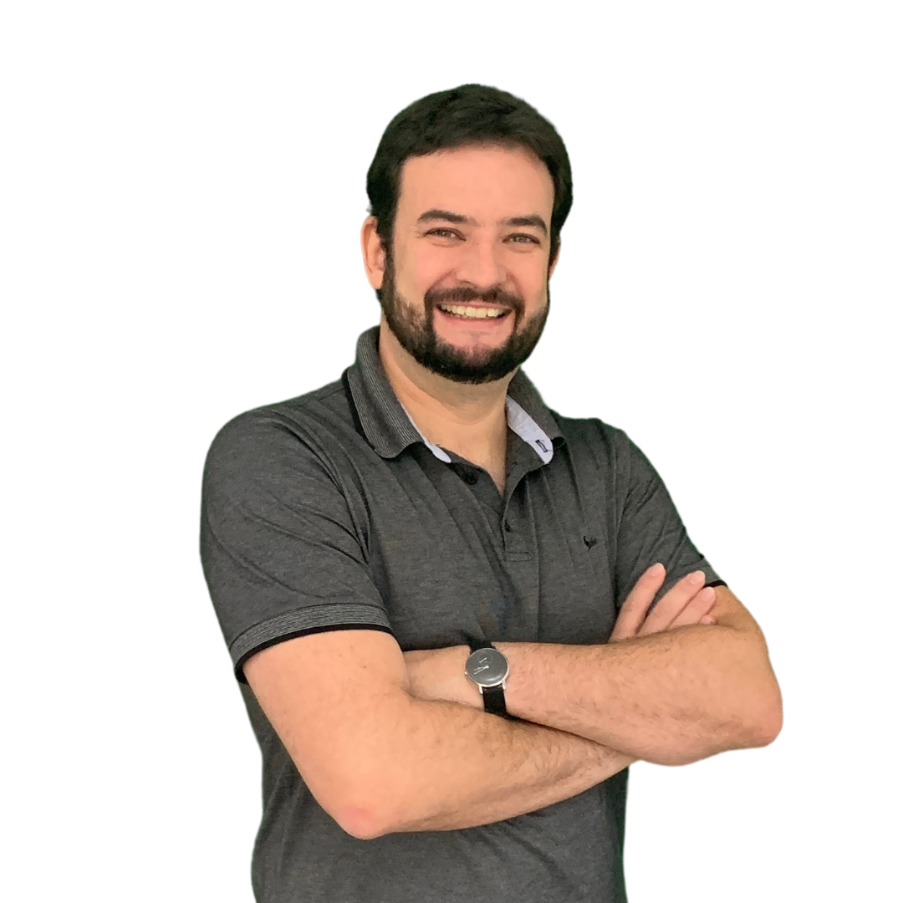
Rodrigo Toffolo
Engenheiro Civil
Materiais Exclusivos
Acesso a materiais, PDFs e planilhas exclusivas da pós
Ao longo da pós-graduação, você tem acesso a materiais desenvolvidos especialmente para aplicação em campo, planilhas de dimensionamento e PDFs de referência técnica.
Conteúdo que não está em nenhum livro, construído por quem projeta fundações todos os dias.
Quero ter acesso aos materiais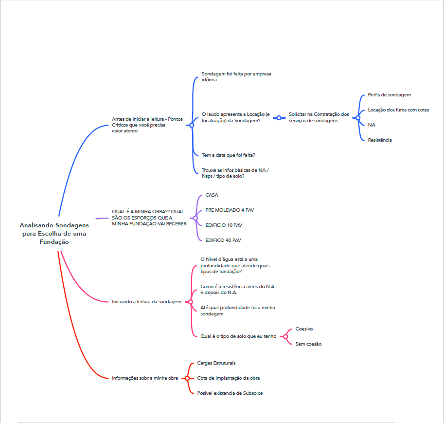
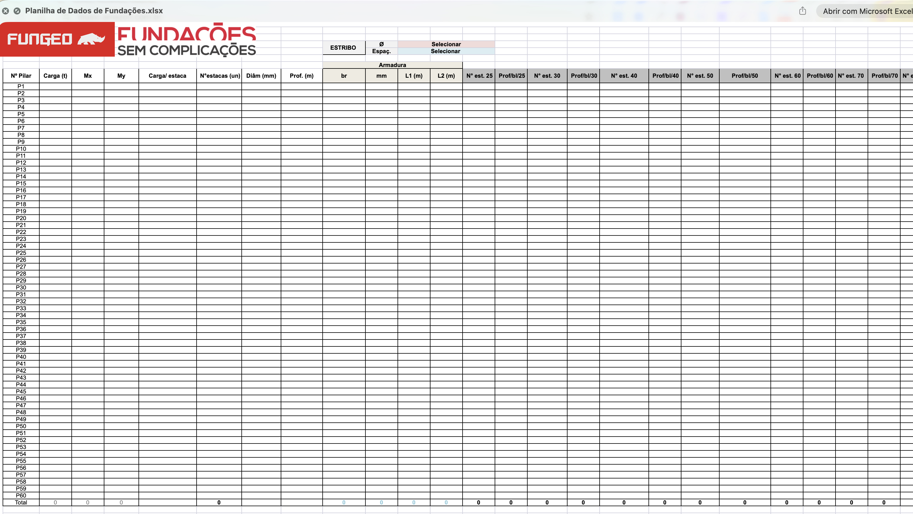
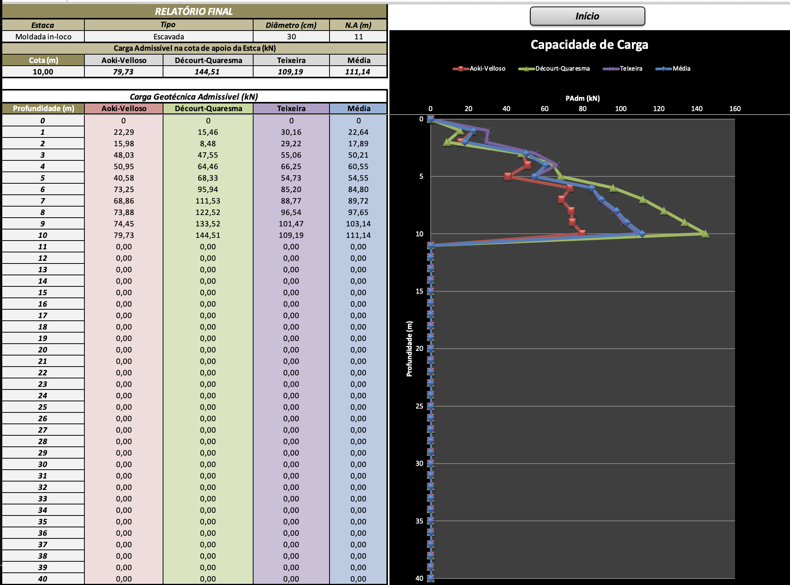
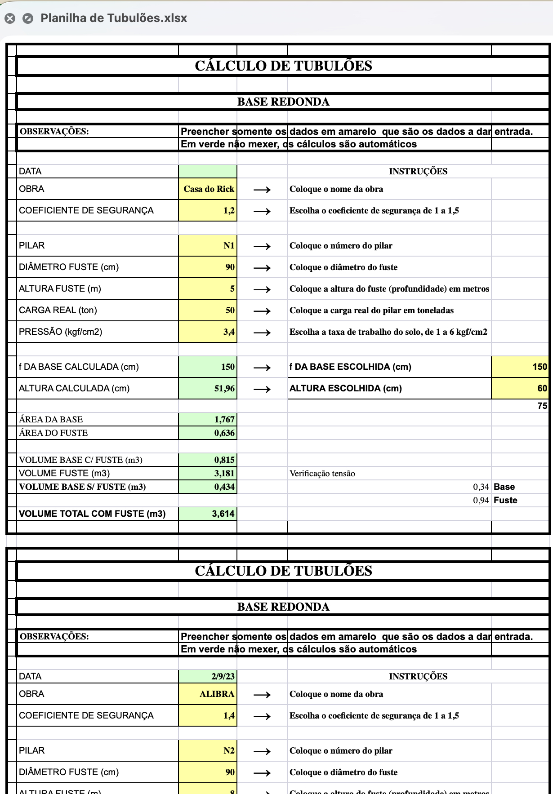
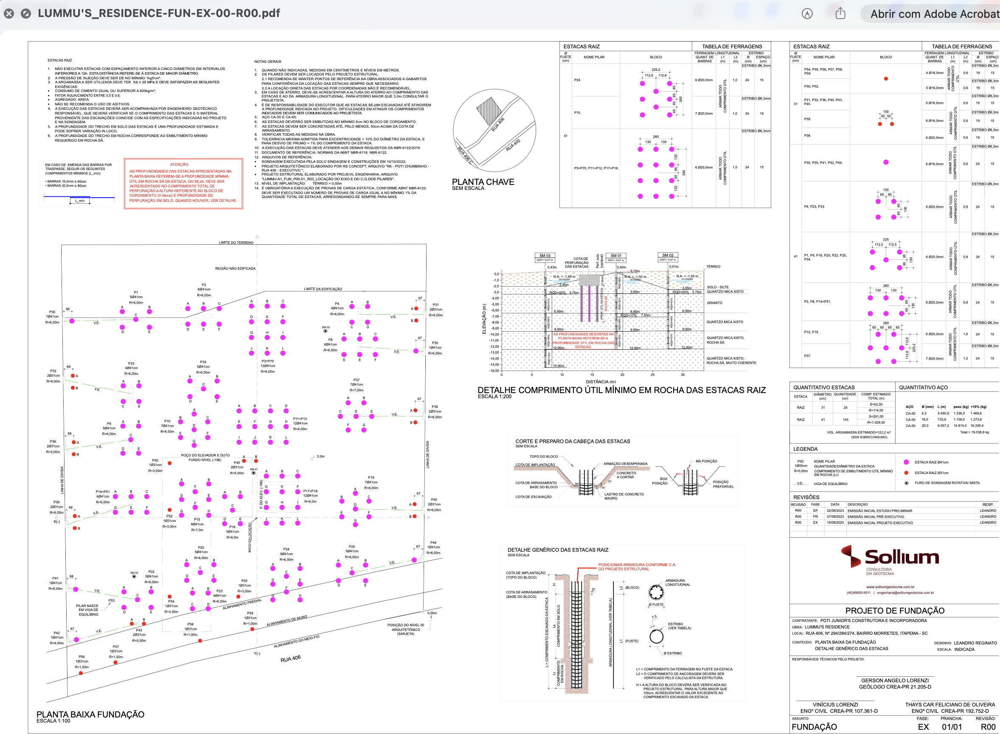
Conheça a metodologia que já ajudou vários de nossos alunos
Em nosso modelo de ensino, diversas frentes que facilitam resultados reais em projetos.
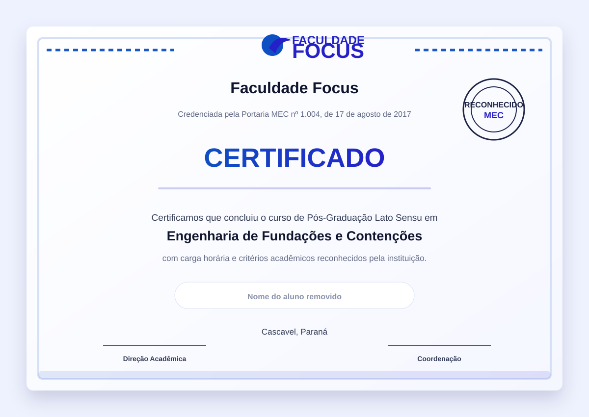
Saiba tudo sobre o Instituto FSC
A maior referência em formação de engenheiros especialistas em fundações do Brasil
A engenharia de fundações e contenções desempenha um papel fundamental no desenvolvimento de obras em todo o país. Um projeto de fundação bem executado exige equilíbrio entre responsabilidade técnica, normas vigentes e conhecimento de campo, e poucos engenheiros saem da faculdade preparados para isso.
É notável que muitos engenheiros concluem sua formação sem a habilidade de projetar, dimensionar ou assinar com confiança um projeto de fundação. A metodologia tradicional das faculdades não favorece o aprendizado prático voltado para o mercado que os engenheiros realmente precisam.
Foi com esse propósito que o Instituto FSC foi criado. Nossa Pós-Graduação tem como objetivo formar engenheiros especialistas capazes de projetar com confiança, seguindo os passos de uma metodologia testada e aprovada, construída dentro de obra por quem assina e executa fundações todos os dias.
Falar com a equipe FSC